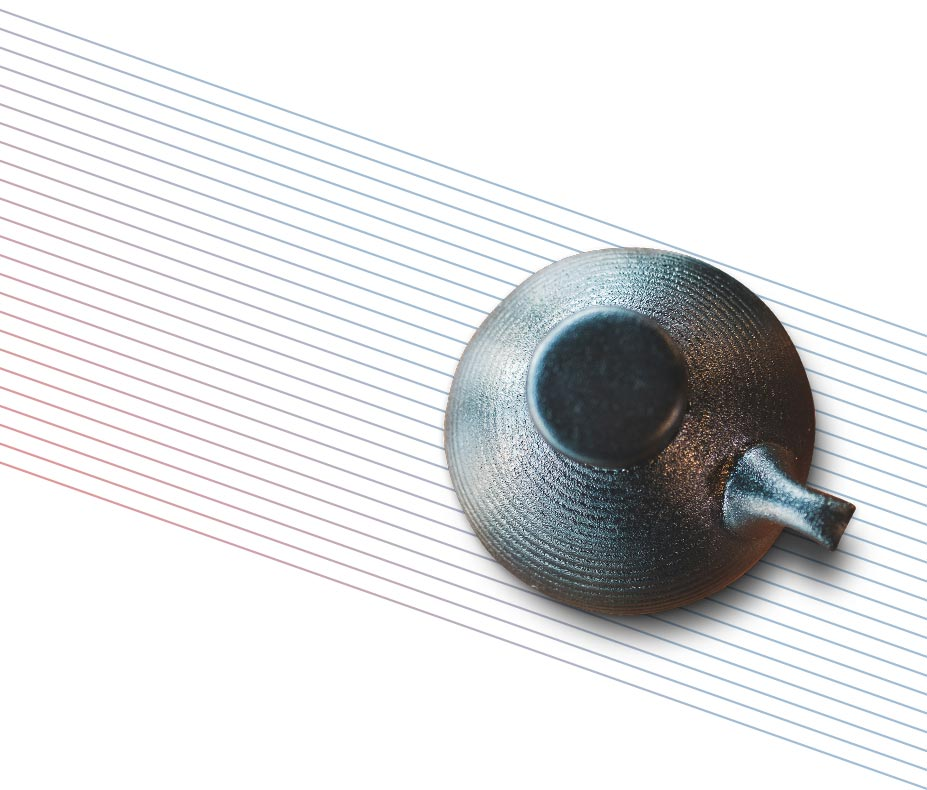
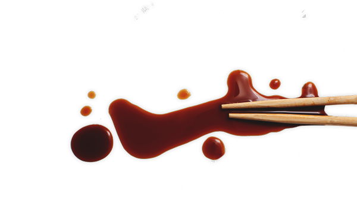
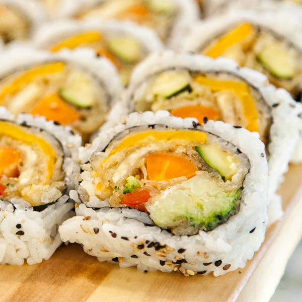
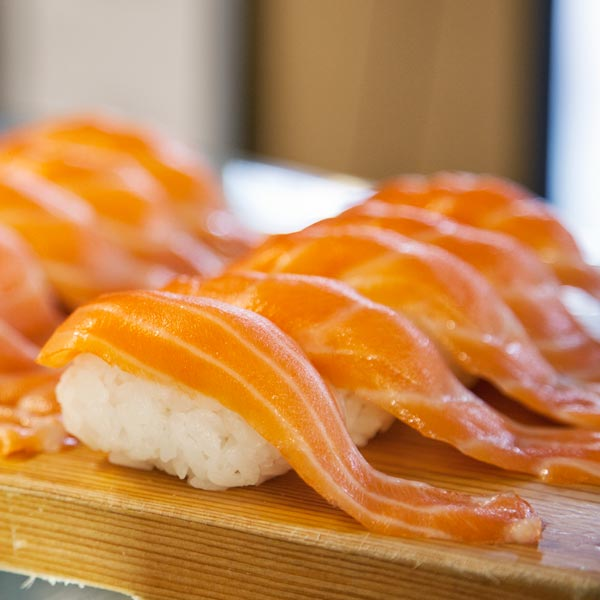
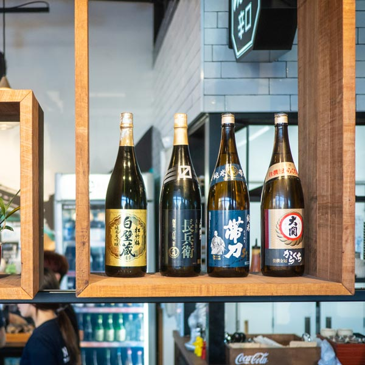
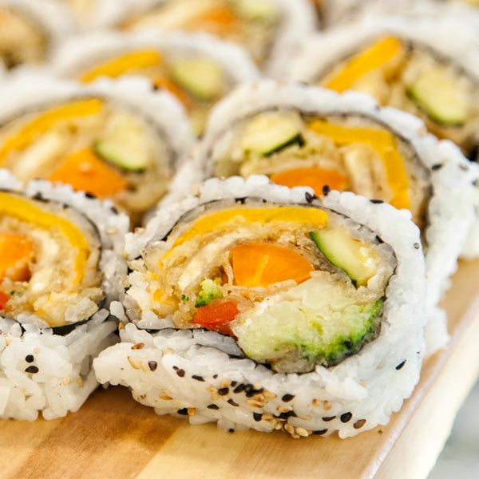
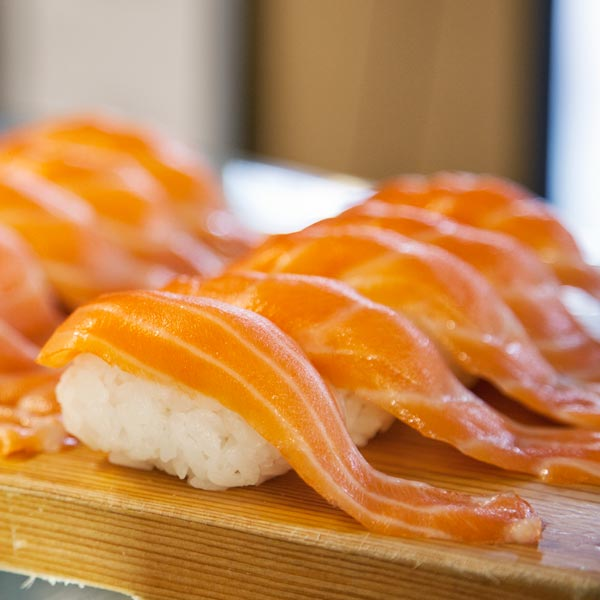
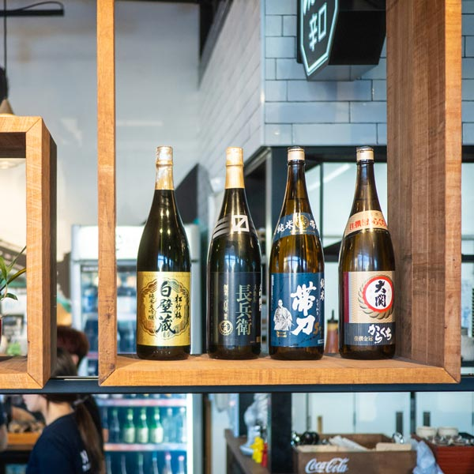
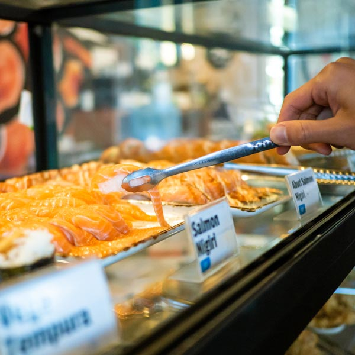
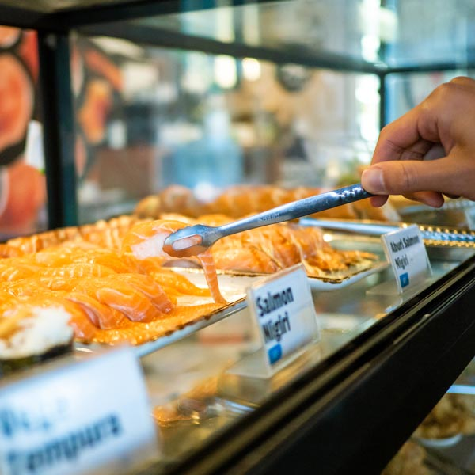

Choose
your taste
with us
Welcome to
hikari sushi
Hikari Sushi Bar, contemporary Japanese cuisine, have presented ourselves with high quality Ingredients, top skilled chefs and an excellent customer service from the start to serve the best Sushi in New Zealand.
Sushi & Meal
NigiriA small oval block of cold rice topped with wasabi and a thin slice of fish, prawn, etc
MakiA small segment cut from a long roll of cold rice and various other ingredients wrapped in a sheet of seaweed
UramakiA Japanese food in the form of a roll made with rice on the outside and filling on the inside
InariInari Sushi (or inarizushi) is essentially a type of sushi consisting of sushi rice (rice lightly seasoned with a mixture of vinegar and sugar) stuffed in fried tofu skin
BentoA single-portion take-out meal. Bento is served in a lacquered decorated box that is divided into sections for holding individual portions of food
DonburiJapanese rice bowl dish. Fish, meat, vegetables or other ingredients simmered together and served over rice. Donburi meals are served in oversized rice bowls also called donburi
CurryYou can try delicious Japanese curry at Hikari. Curry with katsu is the best combination for people who want a solid meal
NoodlesWe have 2 different kinds of noodles, udon and ramen. Udon is a type of thick wheat flour noodle and Ramen is using thinner wheat noodles
We are proud of offering the first & best Japanese Tapas dining experience in Christchurch! For 90 mins, we are going to feed you until you say stop! We know you will continue to support us to provide this beautiful experience to the hungry Cantabrians.
Branches
beach
5 Beach Street, Queenstown, 9300
Mon - Sun
11:30 am - 02:30 pm
05:00 am - 09:30 pm
05:00 am - 09:30 pm
{kind=link}
The Mall
6/22 Ballarant Street, Queenstown 9348
Mon - Sun
10:00 am - 6:00 pm
5 Mile
32 Grant Road, Frankton, Queenstown 9300
Mon - Wed
Thu - Sat
Sun
Thu - Sat
Sun
9:00 am - 6:00 pm
9:00 am - 8:00 pm
9:00 am - 6:00 pm
9:00 am - 8:00 pm
9:00 am - 6:00 pm
George
363 George Street, Dunedin 9016
Mon - Sun
9:00 am - 9:00 pm
Meridian
267 George Street, Meridian Mall, Dunedin 9016
Mon - Thu
Fri
Sat - Sun
Fri
Sat - Sun
9:00 am - 6:00 pm
9:00 am - 8:00 pm
9:00 am - 5:00 pm
9:00 am - 8:00 pm
9:00 am - 5:00 pm
Awly Building
287 Durham Street North, Christchurch Central, Christchurch 8013
Mon - Sat
9:00 am - 9:00 pm


 





 
